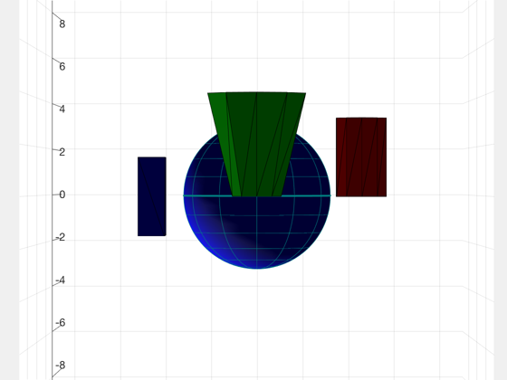

Demonstrate camera pointing. The default 10 deg FOV camera is used.
Uses echo and pause to step through different cases.
Since version 8. ------------------------------------------------------------------------- See also AutoPoint, PointCameraModel, DrawPatch, QLVLH, AddAxes, VOrbit -------------------------------------------------------------------------
Contents
%-------------------------------------------------------------------------- % Copyright (c) 2009 Princeton Satellite Systems, Inc. % All rights reserved. %-------------------------------------------------------------------------- global PSS_NO_INTERACTIVE_DEMOS echo on
Use DrawPatch for example objects
%----------------------------------- DrawPatch; echo off set(gca,'projection','perspective'); set(gca,'PlotBoxAspectRatio',[1 1 1]); aMax = max(axis); axis(aMax*[-1 1 -1 1 -1 1]); view(3); if PSS_NO_INTERACTIVE_DEMOS pause(1) else pause end echo on
%% Use DrawPatch for example objects %----------------------------------- DrawPatch; echo off
Point at green object from above (looking down along r)
%--------------------------------------------------------- set(gcf,'name','Pointing from above') % Specify rECI in km and radius in m %------------------------------------ gTarget = []; gTarget.rECI = [6;0;0]/1000; gTarget.radius = 2; % Use AutoPoint to locate and orient the camera %----------------------------------------------- [qCamera,rCamera,distance] = AutoPoint( 'above', [], gTarget ); % Use PointCameraModel with the default camera model to get the Matlab axes % camera properties including "up" and view angle. %-------------------------------------------------------------------------- [position,target,up,angle] = PointCameraModel([],rCamera,qCamera,distance); % Set the computed camera properties on the current axis %-------------------------------------------------------- set(gca,'cameraPosition',position); set(gca,'cameraTarget',target); set(gca,'cameraUpVector',up); set(gca,'cameraViewAngle',angle); echo off if PSS_NO_INTERACTIVE_DEMOS pause(1) else pause end % Reset axes camlookat(gca) echo on
%% Point at green object from above (looking down along r) %--------------------------------------------------------- set(gcf,'name','Pointing from above') % Specify rECI in km and radius in m %------------------------------------ gTarget = []; gTarget.rECI = [6;0;0]/1000; gTarget.radius = 2; % Use AutoPoint to locate and orient the camera %----------------------------------------------- [qCamera,rCamera,distance] = AutoPoint( 'above', [], gTarget ); % Use PointCameraModel with the default camera model to get the Matlab axes % camera properties including "up" and view angle. %-------------------------------------------------------------------------- [position,target,up,angle] = PointCameraModel([],rCamera,qCamera,distance); % Set the computed camera properties on the current axis %-------------------------------------------------------- set(gca,'cameraPosition',position); set(gca,'cameraTarget',target); set(gca,'cameraUpVector',up); set(gca,'cameraViewAngle',angle); echo off
LVLH pointing
%--------------- set(gcf,'name','Pointing in LVLH frame') gTarget.rECI = [6;0;0]/1000; gTarget.vECI = [0;VOrbit(6);0]/1000; [qCamera,rCamera,distance] = AutoPoint( 'lvlh', [], gTarget ); [position,target,up,angle] = PointCameraModel([],rCamera,qCamera,distance); set(gca,'cameraPosition',position); set(gca,'cameraTarget',target); set(gca,'cameraUpVector',up); set(gca,'cameraViewAngle',angle); % Add a set of LVLH axes to verify camera orientation %----------------------------------------------------- qLVLH = QLVLH(gTarget.rECI,gTarget.vECI); hA = AddAxes( 10, [], qLVLH, gcf ); echo off if PSS_NO_INTERACTIVE_DEMOS pause(1) else pause end % Reset axes camlookat(gca) echo on
%% LVLH pointing %--------------- set(gcf,'name','Pointing in LVLH frame') gTarget.rECI = [6;0;0]/1000; gTarget.vECI = [0;VOrbit(6);0]/1000; [qCamera,rCamera,distance] = AutoPoint( 'lvlh', [], gTarget ); [position,target,up,angle] = PointCameraModel([],rCamera,qCamera,distance); set(gca,'cameraPosition',position); set(gca,'cameraTarget',target); set(gca,'cameraUpVector',up); set(gca,'cameraViewAngle',angle); % Add a set of LVLH axes to verify camera orientation %----------------------------------------------------- qLVLH = QLVLH(gTarget.rECI,gTarget.vECI); hA = AddAxes( 10, [], qLVLH, gcf ); echo off
Fixed pointing
%---------------- set(gcf,'name','Orienting a fixed camera') % Specify the fixed location of the camera %------------------------------------------ rCamera = 30*[1;1;1]; % Use the origin as the target location %--------------------------------------- gTarget.rECI = [0;0;0]; % Point the camera %------------------ [qCamera,rCamera,distance] = AutoPoint( 'fixed', [], gTarget, rCamera/1000 ); [position,target,up,angle] = PointCameraModel([],rCamera,qCamera,distance); % Set the axes props %-------------------- set(gca,'cameraPosition',position); set(gca,'cameraTarget',target); set(gca,'cameraUpVector',up); set(gca,'cameraViewAngle',angle); echo off if PSS_NO_INTERACTIVE_DEMOS pause(1) else pause end echo on
%% Fixed pointing %---------------- set(gcf,'name','Orienting a fixed camera') % Specify the fixed location of the camera %------------------------------------------ rCamera = 30*[1;1;1]; % Use the origin as the target location %--------------------------------------- gTarget.rECI = [0;0;0]; % Point the camera %------------------ [qCamera,rCamera,distance] = AutoPoint( 'fixed', [], gTarget, rCamera/1000 ); [position,target,up,angle] = PointCameraModel([],rCamera,qCamera,distance); % Set the axes props %-------------------- set(gca,'cameraPosition',position); set(gca,'cameraTarget',target); set(gca,'cameraUpVector',up); set(gca,'cameraViewAngle',angle); echo off
Demonstrate pointing at the center of multiple targets
%-------------------------------------------------------- set(gcf,'name','Pointing at multiple targets') camera = []; % Add the positions and sizes of the additional bodies %------------------------------------------------------ gTarget(2).rECI = [8;4;0]/1000; gTarget(2).radius = 1.5; gTarget(3).rECI = [8;-4;0]/1000; gTarget(3).radius = 1.5; % Point the camera %------------------ [qCamera,rCamera,distance] = AutoPoint( 'above', [], gTarget ); [position,target,up,angle] = PointCameraModel([],rCamera,qCamera,distance); set(gca,'cameraPosition',position); set(gca,'cameraTarget',target); set(gca,'cameraUpVector',up); set(gca,'cameraViewAngle',angle); echo off %--------------------------------------
%% Demonstrate pointing at the center of multiple targets %-------------------------------------------------------- set(gcf,'name','Pointing at multiple targets') camera = []; % Add the positions and sizes of the additional bodies %------------------------------------------------------ gTarget(2).rECI = [8;4;0]/1000; gTarget(2).radius = 1.5; gTarget(3).rECI = [8;-4;0]/1000; gTarget(3).radius = 1.5; % Point the camera %------------------ [qCamera,rCamera,distance] = AutoPoint( 'above', [], gTarget ); [position,target,up,angle] = PointCameraModel([],rCamera,qCamera,distance); set(gca,'cameraPosition',position); set(gca,'cameraTarget',target); set(gca,'cameraUpVector',up); set(gca,'cameraViewAngle',angle); echo off %-------------------------------------- % $Date: 2020-06-08 16:21:43 -0400 (Mon, 08 Jun 2020) $ % $Revision: 52690 $